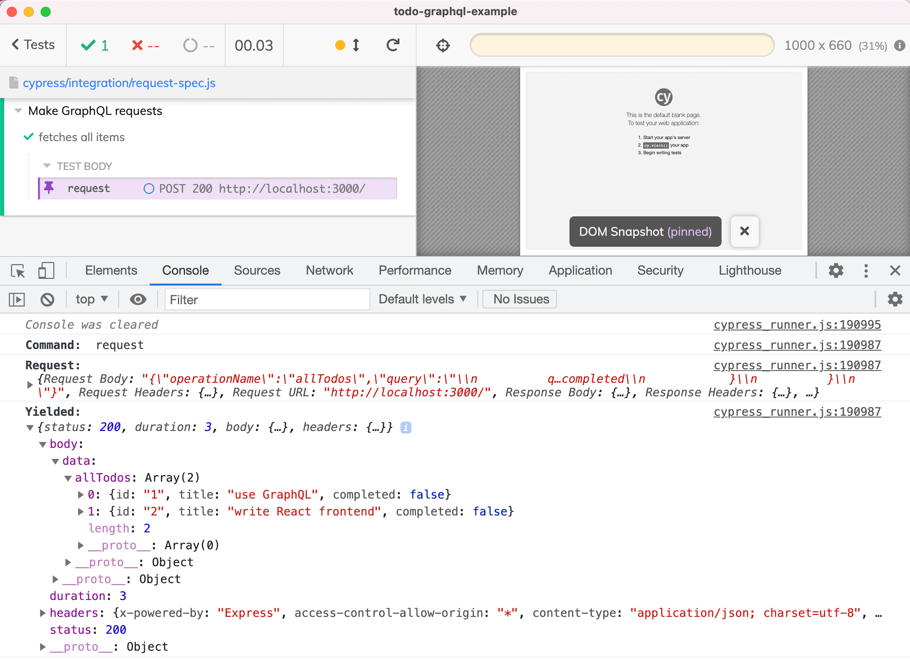
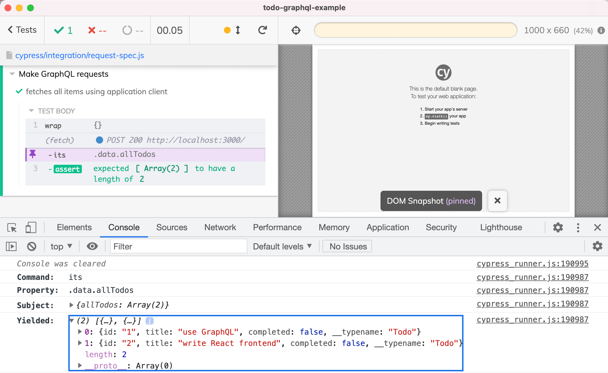
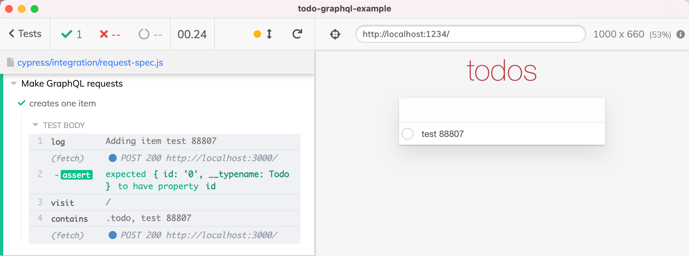
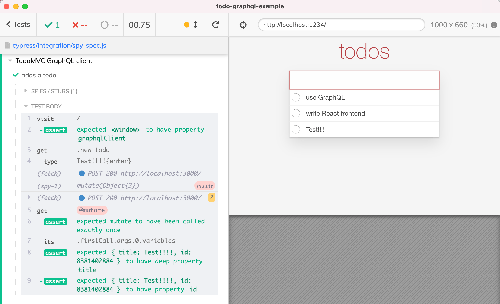
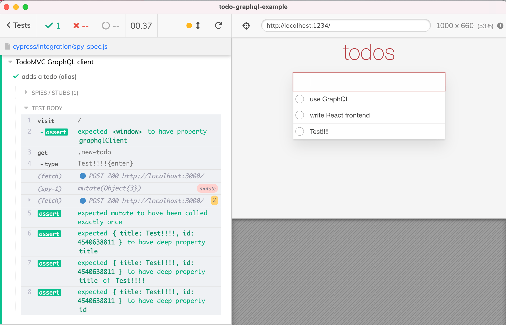
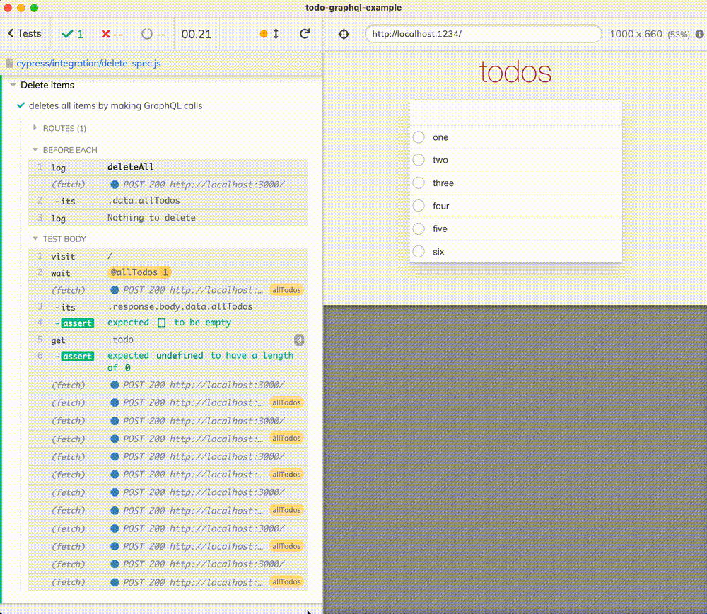

🧭 Find the source code for this blog post in the repository bahmutov/todo-graphql-example
Fetch all todos
First, let's see how our Cypress tests can fetch all todo items. This allows us to confirm what the application is showing for example. Let's fetch the items using the cy.request command.
1 | it('fetches all items', () => { |
Tip: if you are not sure about the body object, look at the network calls the application is making, and copy the GraphQL query from there.

From the response object we can get the list of todos and confirm their number and other details.
1 | cy.request({ ... }) |
Note, if you do not know the precise number of items, but there should be >= 0 items use .gte assertion
1 | cy.request({ ... }) |
Use application client
Instead of using cy.request directly, we can fetch the items using the same GraphQL client the application is using! Just make sure to set the "cache" to false to avoid race conditions between the application and the test runner's client's memory caches.
Let's say this is the source file with the GraphQL client exported
1 | // imports and init code |
Then we can create an instance of the GraphQL client by importing it from the spec file. Note: this creates a separate client instance from the application's GraphQL client instance.
1 | import { gql } from '@apollo/client' |
The test passes

Add an item
Using the GraphQL client and even sharing the queries between the application and the specs is very convenient. For example, let's create an item and then confirm it is visible in the application.
1 | import { gql } from '@apollo/client' |

If the spec file imports the GraphQL client from the application's source file, it creates its own instance separate from the GraphQL client created by the application in its iframe. This has some advantages, for example, the test above could execute the GraphQL mutation even before the cy.visit command loaded the application. But if you want to share the GraphQL client between the application and the spec, there is a way:
1 | export const client = new ApolloClient({ |
We set the client reference created by the application as a property of the window object. From the spec, we can grab this property and use it to spy and stub client method calls. Here is a typical test that:
- Visits the page. The application creates a GraphQL client object and sets it as
window.graphqlClientvalue. - The command
cy.visityields the application' window object. Thus we can directly retry until we get the client's reference usingcy.visit('/').should('have.property', 'graphqlClient')assertion. - Once we have an object reference, we can use cy.spy and cy.stub to observe / stub the calls the application is making.
1 | it('adds a todo', () => { |

Aliases
Tip: we gave our spy an alias "mutate" using the cy.as command. We can get these aliases using the test context "this[alias name]" syntax after the .as(name) command has finished. Cypress forces all commands to run one by one, thus we can use the "this[alias name]" syntax by making the access from a .then(function () { ... }) callback function following the .as command.
1 | it('adds a todo (alias)', () => { |
Since the expect(this.mutate).to.have.been.calledOnce does not retry make sure to use it only after the client call has been made for sure.

Delete all todos
A very common problem for an end-to-end test is to clear the existing data before the test. Imagine you have a GraphQL endpoint, and you could get all Todo items? How would you go about deleting them? If you do not have a mutation "delete all X", then you need to delete each item one by one.
Here is how to do this: first let's write a reusable method and place it in the utils.js file.
1 | import { gql } from '@apollo/client' |
We can use this method before each test, or whenever we want:
1 | /// <reference types="cypress" /> |

You can see deleting all items using GraphQL calls in this video below
Happy testing!